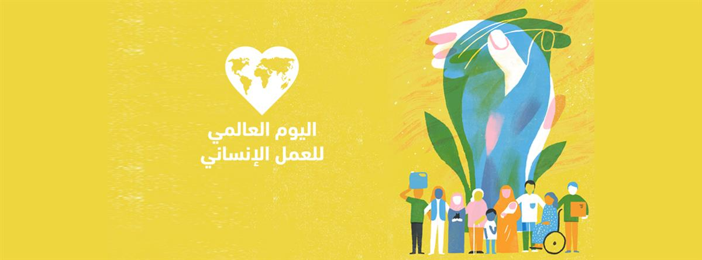

Footage of destruction of Al-Shifa hospital in Gaza, following the siege by the Israeli forces. The UN reiterated that hospitals must be respected and protected; they must not be used as battlefields.
Photo:©WHO/UN News
ON SOURCE: UNITED NATIONS
World Humanitarian Day 2024
2023 was the deadliest year on record for humanitarian workers. 2024 could be even worse. These facts lay bare a glaring truth: the world is failing humanitarian workers and, by extension, the people they serve.
Despite universally accepted international laws to regulate the conduct of armed conflict and limit its impact, violations of these laws continue unabated, unchallenged and unchecked. And while civilians, including aid workers, pay the ultimate price, the perpetrators continue to evade justice.
This failure of those in power cannot be allowed to continue. Attacks on humanitarian workers and humanitarian assets must stop. Attacks on civilians and civilian infrastructure must stop.
This World Humanitarian Day, we demand an end to these violations and the impunity with which they are committed. It is time for those in power to end impunity and #ActForHumanity.
This World Humanitarian Day, celebrating humanitarian workers is not enough. We need those in power to act now to ensure the protection of civilians, including humanitarians, in conflict zones. Share this video to help us pressure parties to conflict and world leaders to #ActForHumanity. (OCHA)

2024 Campaign: #ActForHumanity
Our 2024 WHD efforts will confront the normalization of attacks on civilians, including humanitarians, and impunity under International Humanitarian Law (IHL). The aim is to build public support to help pressure parties to conflict and world leaders to take action to ensure the protection of civilians, including humanitarians, in conflict zones. We will also release the latest aid worker security data and trends and hold events around the world to demand that those in power #ActForHumanity.
Background
On 19 August 2003, a bomb attack on the Canal Hotel in Baghdad, Iraq, killed 22 humanitarian aid workers, including the UN Special Representative of the Secretary-General for Iraq, Sergio Vieira de Mello. Five years later, the United Nations General Assembly adopted a resolution designating 19 August as World Humanitarian Day (WHD).
Each year, WHD focuses on a theme, bringing together partners from across the humanitarian system to advocate for the survival, well-being and dignity of people affected by crises, and for the safety and security of aid workers.
WHD is a campaign by the United Nations Office for the Coordination of Humanitarian Affairs (OCHA).
Documents
- Convention on the Safety of United Nations and Associated Personnel
- General Assembly resolution (A/RES/63/139) on Strengthening of the coordination of emergency humanitarian assistance of the United Nations (establishing World Humanitarian Day)
- General Assembly resolution on the Safety and security of humanitarian personnel and protection of United Nations personnel
- Report of the Secretary-General on the Safety and security of United Nations and associated personnel
- OCHA Strategic Plan 2018 - 2021
- Human Security 2014-2017 Strategic Plan
- Aid Worker Security Report 2023
- OCHA Annual Report 2023
###
### Facts & Figures
- The Humanitarian Access SCORE Report: Gaza - the first six months (March 2024) estimated that more than 30,000 civilian deaths have included over 150 aid workers, an unprecedented number for a single context in such a short period.
- The 2024 Global Humanitarian Overview requires $48.65 billion to assist 186.5 million people in need. As of end of July 2024, reported GHO funding amounts to $12.26 billion or 11 per cent less than last year at the same time.
- From OPT to Sudan to Myanmar and beyond, the first half of 2024 was characterized by attacks against health, education and water and sanitation facilities that left millions of people without access to the services they need to survive. (Global Humanitarian Overview 2024)
- In 2023, the number of aid workers killed more than doubled in two years: from 118 in 2022 to 261 in 2023. (OCHA)
- In 2023, 78 aid workers were kidnapped and 196 wounded worldwide. (OCHA)
- In 2023, The overwhelming majority of humanitarian staff killed or injured are national humanitarian workers. (International NGO Safety Organisation)
- Of the aid workers who died, 96% were national staff and 4% were international (expatriate) staff - more than half (47%) were staff of national NGOs.
- Data for 2023 in the Aid Worker Security Database shows that South Sudan has been the most dangerous place for aid workers for several consecutive years. Sudan is a close second (as of 17 August 2013).
Related websites
- Office for the Coordination of Humanitarian Affairs (OCHA)
- OCHA 2024 Campaign: #ActForHumanity
- Delivering Humanitarian Aid
- Inter-Agency Standing Committee (IASC)
- UN World Food Programme (WFP)
- UN Refugee Agency (UNHCR)
- UN Children's Agency (UNICEF)
- World Health Organization (WHO)
- Remember the Fallen
- News related to Humanitarian Aid
ON SOURCE: UNITED NATIONS